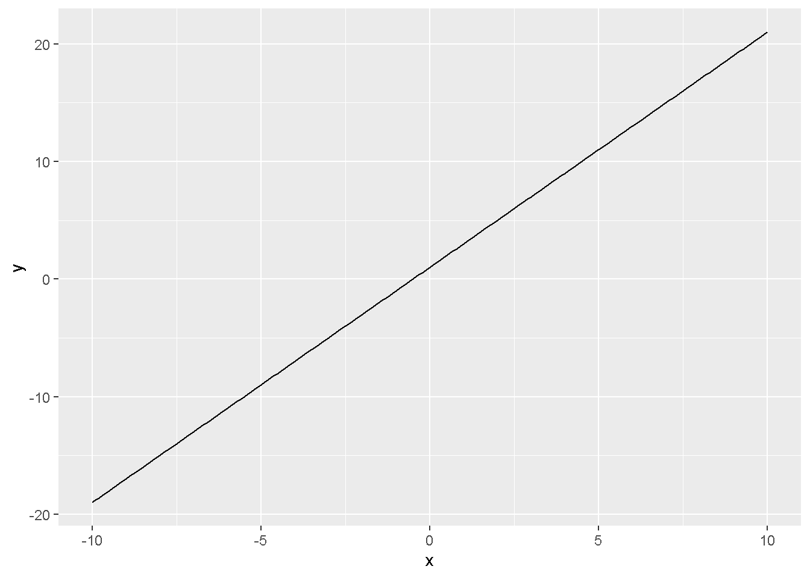
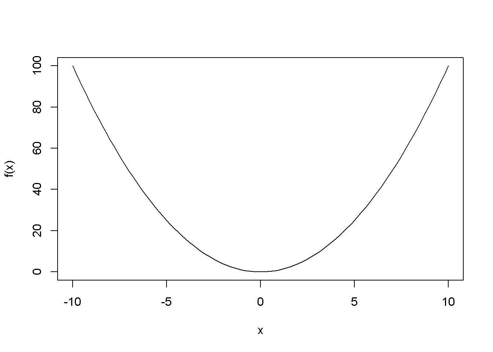
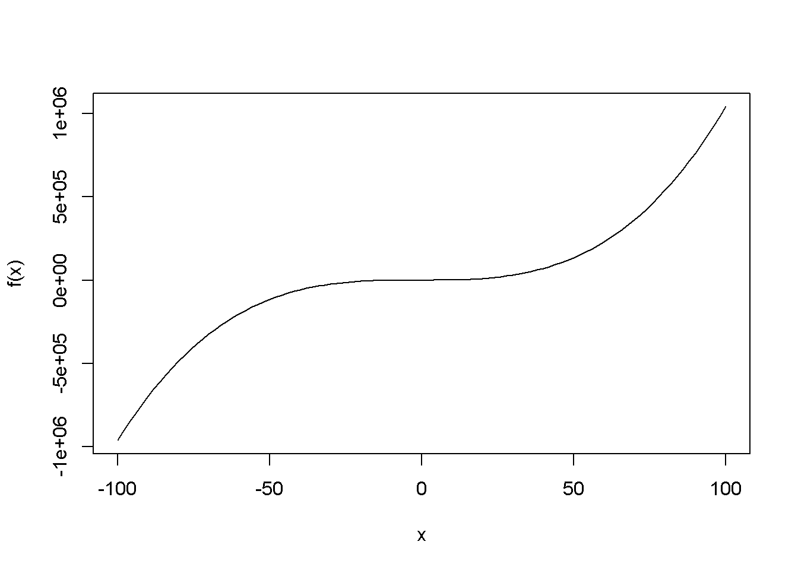
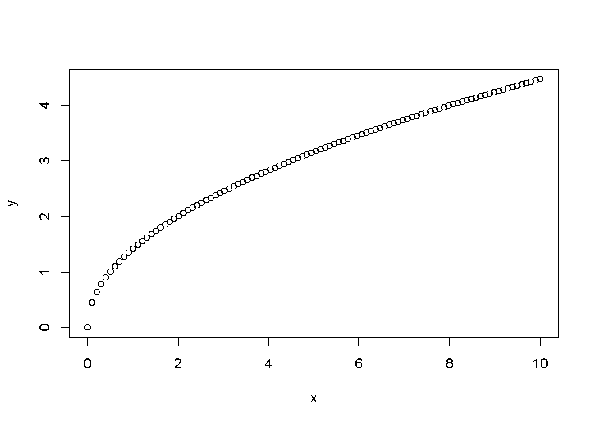
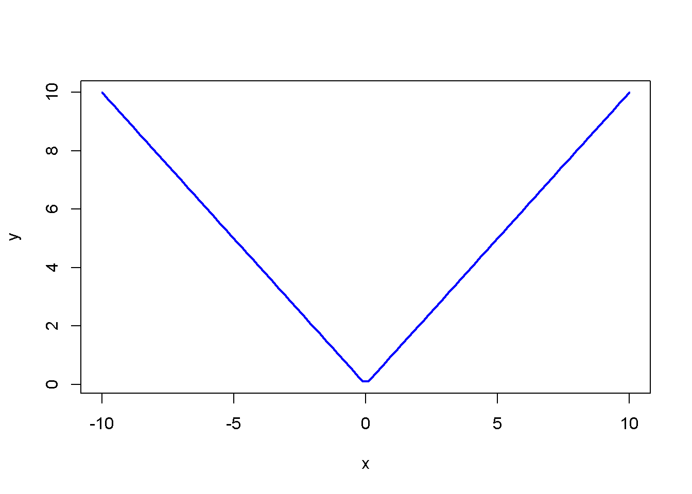
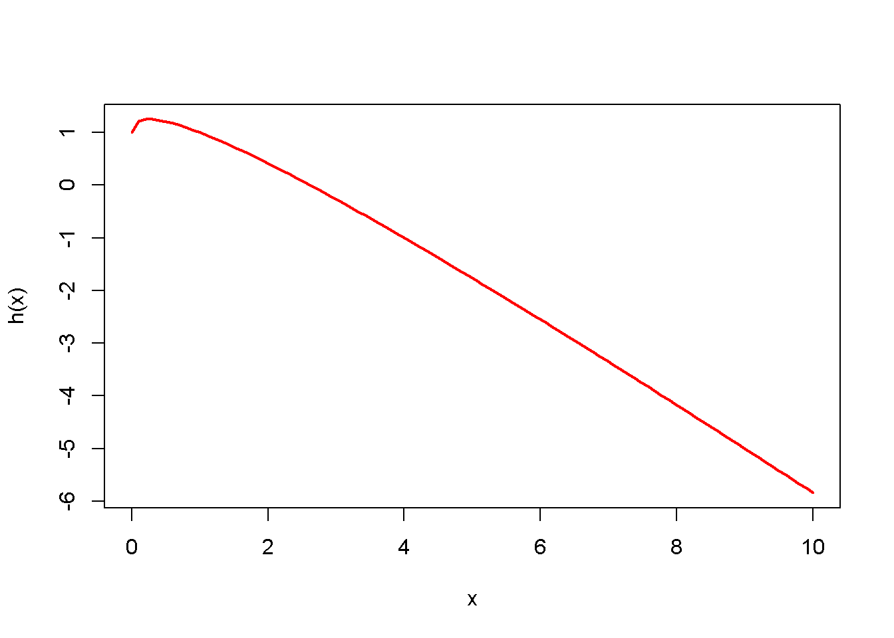
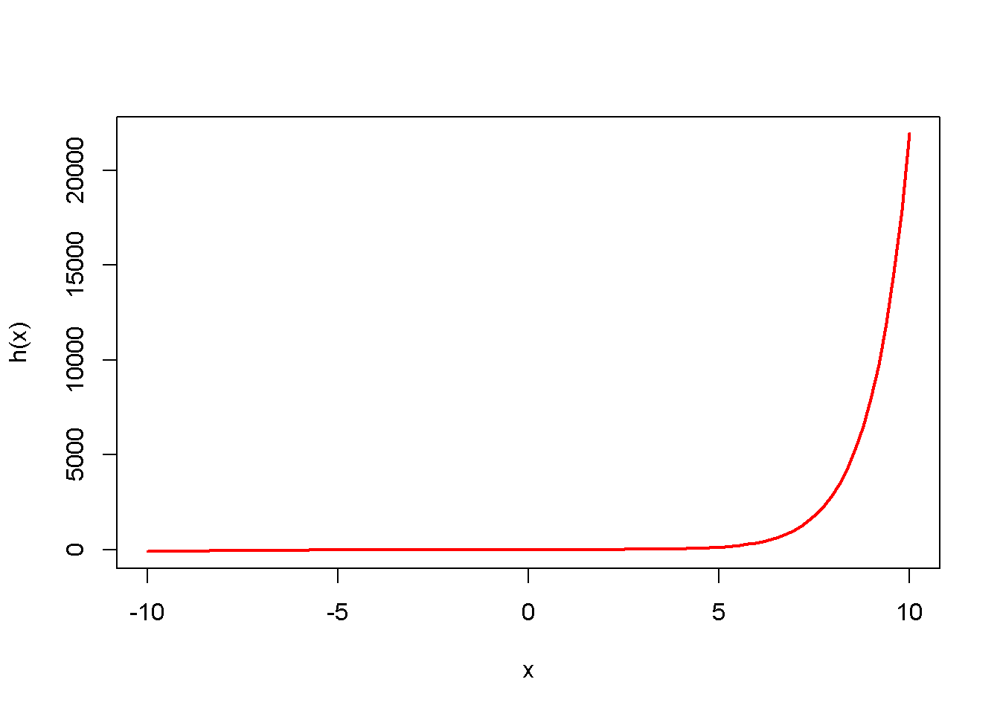
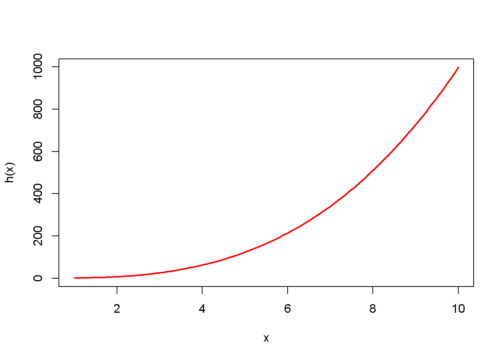
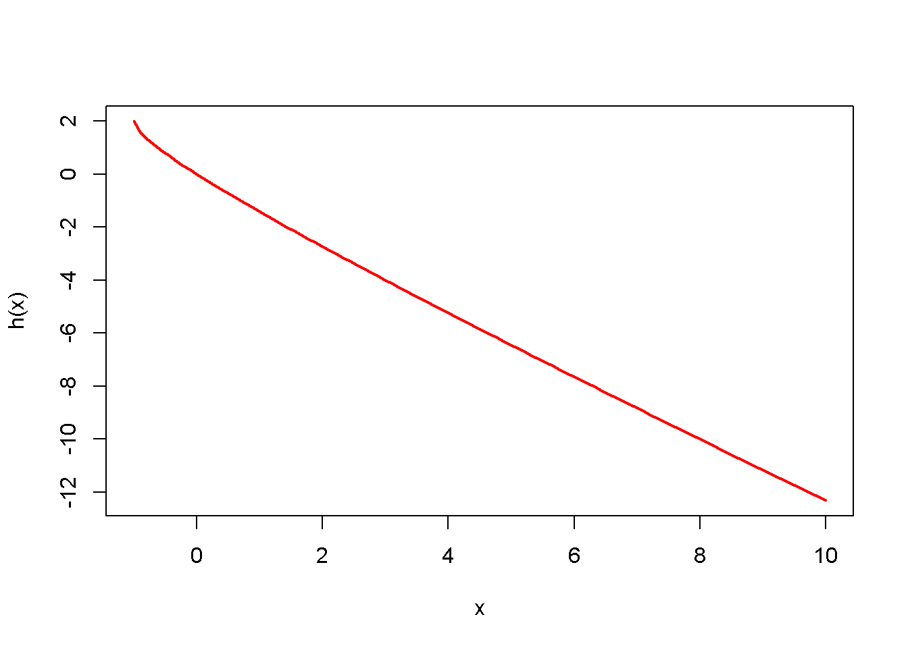

1 Funciones Reales
El concepto de función es uno de los más importantes en todas las matemáticas.
1.1 Conceptos Importantes
1.1.1 Definición de una Función para matemáticos.
Sean \(A\) y \(B\) dos conjuntos .Una función \(f\) de \(A\) a \(B\),denotada \(f:A \rightarrow B\), es una relación en \(A\times B\) tal que si \(afb_1\), \(afb_2\), entonces \(b_1=b_2\). (Diaz 2007)
1.1.2 Definición de una Función para no matemáticos.
Consideremos dos conjuntos \(A\) y \(B\), a la relación binaria \(f\) de \(A\) en \(B\) le llamaremos función de A en B ,si y solo si , verifica:(Espinoza 2002,p 215)
\(f \subset A \times B\)
\((a,b) \in f \wedge (a,c) \in f \Rightarrow b=c\)
Ejemplo 1: Sean \(A=\left \{ Alumnos\ de\ la\ UTP \right \}\), \(B=\left \{ Números \ enteros \right \}\).
- Como ejemplo de función, tenemos \(f:A \rightarrow B\) que a cada \(x \in A\) asocia su año de nacimiento.
Obs: Cada alumno solo tiene un único año de nacimiento
- Otro ejemplo es la función \(g:A \rightarrow B\) que a cada \(x \in A\) asocia su año de ingreso en la UTP.
Obs: Cada alumno solo tiene un único año de ingreso
Ejemplo 2: Sea \(A=\left \{Personas\right \}\).Si a cada \(x \in A\) hacemos corresponder \(f(x) \in A\) de manera que \(f(x)\) sea hermano de \(x\) ,entonces \(f\) no es una función por dos razones.
- Primero por excepción pues no toda personas tiene hermano(a).
- Segundo por que existen personas que tienen más de un hermano(a).
1.2 Tipos de Funciones
1.2.1 Función Lineal
A la función f,le llamaremos función lineal, si su regla de correspondencia es: \[f(x)=ax+b\] donde \(a,b\) son constantes y \(a\neq 0\).
Graficaremos con la el paquete ggplot2 en R studio la función \(f(x)=2x+1\) veremos que la intersección con el eje \(Y\) es \(b=1\).
library(ggplot2)
lineal <- function(x) {
2 * x + 1
}
x <- seq(-10, 10, by = 0.1)
y <- lineal(x)
df <- data.frame(x = x, y = y)
ggplot(df, aes(x = x, y = y)) +
geom_line()
1.2.2 Función Cuadrática
A la función f, le llamaremos función cuadrática, si su regla de corresponencia es:
\[f(x)=ax^2+bx+c\ \ ,\ \ \ a,b,c \in \mathbb{R} ,a\neq 0\]
Graficaremos con la función curve() que viene por defecto en R la función \(f(x)=x^2\).
# Definir la función cuadrática
f <- function(x) {
x^2
}
# Graficar la función cuadrática
curve(f, from = -10, to = 10)
1.2.3 Funciones polinómicas
A la función \(f\), le llamaremos función polinomial o función polinómica, si su regla de correspondencia es:
\[f(x)=a_nx^n+a_{n-1}x^{n-1}+\cdots +a_1x+a_0, \ x\in \mathbb{R}\]
donde \(a_0,a_1,a_2, \cdots ,a_{n-1},a_n\) son números reales, \(a_n\neq 0\).
Graficaremos con la función curve() que viene por defecto en R la función \(f(x) = x^3 + 4x^2 + 5x + 6\)
# Definir la función cúbica
f <- function(x) {
x^3 + 4*x^2 + 5*x + 6
}
# Graficar la función cúbica
curve(f, from = -100, to = 100)
1.2.4 Funcion Raíz Cuadrada
A la función \(f\),le llamaremos función raíz cuadrada, si su regla de correspondencia es:
\[f(x)=\sqrt x\]
Graficaremos con la función plot() que viene por defecto en R la función \(f(x) = \sqrt {2x}\)

1.2.5 Función Valor Absoluto
A la función \(f\), le llamaremos función valor absoluto, si su regla de correspondencia es: \[f(x) =|x|= \begin{cases} x & \text{si } x \geq 0 \\ -x & \text{si } x < 0 \end{cases}\]
Graficaremos con la función plot() que viene por defecto en R la función \(f(x) =|x|}\)

1.3 Álgebra de Funciones
Se pueden realizar cinco tipos de operaciones diferentes con funciones:suma, resta, producto, división y composición. Es decir, dos funciones pueden ser sumadas, restadas, multiplicadas, divididas o compuestas.Puede visitar
- Suma de funciones
El valor de la suma de dos funciones es igual a la suma del valor de cada función. Es decir, para calcular la imagen de una función suma basta con sumar las imágenes de las funciones que intervienen en la operación. \[ (f+g)(x)=f(x)+g(x)\] Además, el dominio de la suma de dos funciones es la intersección del dominio de cada función sumada \[Dom(f+g)=Dom(f) \cap Dom(g)\] Veamos cómo se suman dos funciones mediante un ejemplo: \(f(x)=-x+1\) y \(g(x)=\sqrt x\) .Graficar \((f+g)(x)\).
f <- function(x) {
-x+1
}
g <- function(x) {
sqrt(x)
}
h <- function(x) {
f(x) + g(x)
}
x <- seq(0, 10, length.out = 100)
plot(x, h(x), type = "l", col = "red", lwd = 2)
Primero sumamos las dos funciones:
\[(f+g)(x)=f(x)+g(x)=-x+1+\sqrt x\] Y ahora hallamos el dominio de la función suma. Para ello, calculamos el dominio de cada función por separado:
- \(Dom(f)=\mathbb{R}\) y \(Dom(g)=\left [ 0, +\infty \right >\) entonces, el dominio de la función resultante de la operación será: \[Dom(f+g)=Dom(f) \cap Dom(g)=\left [ 0, +\infty \right >\]
Toda operación con funciones debe acompañarse de su dominio para definir completamente el resultado.
- Ejemplo1:
f <- function(x) {
-x^2
}
g <- function(x) {
exp(x)
}
h <- function(x) {
f(x) + g(x)
}
x <- seq(-10, 10, length.out = 100)
plot(x, h(x), type = "l", col = "red", lwd = 2) * Ejemplo2:
f <- function(x) {
-log(x)
}
g <- function(x) {
x^3
}
h <- function(x) {
f(x) + g(x)
}
x <- seq(1, 10, length.out = 100)
plot(x, h(x), type = "l", col = "red", lwd = 2)
2. **Resta de funciones**
La imagen de la resta (o diferencia) de dos funciones es la resta de las imágenes de cada función que participa en la operación:
$$ (f-g)(x)=f(x)-g(x)$$
Igual que con la función suma, el dominio de la resta de dos funciones es equivalente a la intersección del dominio de cada función.
$$Dom(f-g)=Dom(f) \cap Dom(g)$$
De manera que si una función no está definida en algún valor de la variable independiente x, tampoco lo estará la función resultante de la resta.
Veamos cómo se restan dos funciones a través de un ejemplo: $f(x)=-x+1$ y $g(x)=\sqrt x$ .Graficar $(f+g)(x)$.
```r
f <- function(x) {
-x+1
}
g <- function(x) {
sqrt(x+1)
}
h <- function(x) {
f(x) - g(x)
}
x <- seq(-1, 10, length.out = 100)
plot(x, h(x), type = "l", col = "red", lwd = 2)
Primero restamos las dos funciones:
\[(f-g)(x)=f(x)-g(x)=-x+1-\sqrt {x+1}\]
Y luego determinamos el dominio de la función resta: \(Dom(f)=\mathbb{R}\) y \(Dom(g)=\left [ -1, +\infty \right >\) entonces, el dominio de la función resultante de la operación será:
\[Dom(f-g)=Dom(f) \cap Dom(g)=\left [ -1, +\infty \right >\]
- Producto de funciones
Para calcular el producto o (multiplicación) de dos funciones, simplemente debemos multiplicar las expresiones de cada función.
\[(f.g)(x)=f(x).g(x)\]
Por otro lado, el dominio de la función producto es el conjunto intersección del dominio de cada función multiplicada.
\[Dom(f.g)=Dom(f) \cap Dom(g)\]
- División de funciones El resultado numérico de una división (o cociente) de dos funciones corresponde a la siguiente ecuación:
\[( \frac{f}{g} )(x)=\frac{f(x)}{g(x)}\]
Sin embargo, el dominio de la división de dos funciones es el conjunto intersección del dominio de cada función menos todas las x que anulan la función que actúa como divisor, ya que si no obtendríamos una indeterminación.
\[Dom(\frac{f}{g})(x)=Dom(f) \cap Dom(g)-\left \{ x\mid g(x)=0) \right \}\]
- Composición de funciones
La composición de funciones es la operación más difícil de resolver, porque es el concepto más complicado.
La composición de funciones consiste en la aplicación sucesiva de dos funciones. Algebraicamente, la composición de dos funciones se expresa de la siguiente manera:
\[(g \circ f)(x)=g(f(x))\]
Por otro lado, el dominio de la composición de funciones \((g \circ f)(x)\) equivale al conjunto de todos los valores de x en el dominio de la función \(f\) tal que \(f(x)\) pertenece al dominio de la función \(g\). \[Dom(g \circ f)=\left \{x \in Dom(f) \mid f(x) \in Dom(g) \right \}\]